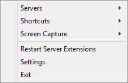
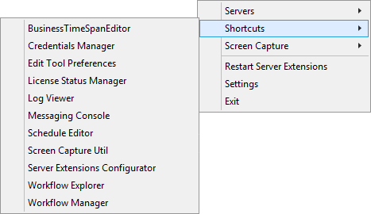
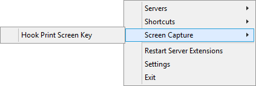

Table Of Contents
- Application Editor
- BusinessTimeSpan Editor
- Composer Theme Editor
- Credentials Manager
- License Status Manager
- LocalMachineInfo Editor
- Log Viewer
- Messaging Console
- Schedule Editor
- Screen Capture Util
- Server Extensions Configurator
- Task Tray Tool
- ToolPreferences Editor
- Workflow Explorer
Start > Programs > Symantec > Workflow Designer > Tools > Task Tray Tool
The Task Tray Tool gives you easy access to registered Workflow Servers, shortcuts, and settings. When you install Workflow, the Task Tray Tool is added to your start menu.
Right-click the Task Tray Tool to view its options
Chapter 40 pg619 - User Guide
Table 40-1
| Option | Description |
|---|---|
| Servers | Displays the Workflow Servers that are registered in the Local Machine Info Editor. See “About the Local Machine Info Editor” on page 604. When you hover over a server, you can log on to its Process Manager, and view the service catalog. |
| Shortcuts | Sets the shortcuts to the client tools. |
| Restart Server Extensions | Restarts the Server Extensions windows service. See “Restarting Workflow Server Extensions” on page 613. |
| Settings | Opens the Local Machine Info Editor. See “About the Local Machine Info Editor” on page 604. |
| Exit | Closes the Task Tray Tool. |
Symantec Glossary
Task Tray Tool
A client tool for Workflow Solution that runs in the task tray and provides quick access to shortcuts and settings.https://www.symantec.com/security_response/glossary/define.jsp?letter=t&word=task-tray-tool
File Location
"[Install Drive]:\Program Files\Symantec\Workflow\Tools\LogicBase.Local.TaskTray.exe"
Help
Screenshots
Open the Task Tray Tool, right-click to see the options

Shortcuts gives a number of options.

"Screen Capture" has "Hook Print Screen Key"

Which makes the "Hook Print Screen Key" use the Screen Capture app instead of the usual.
Settings takes you to LocalMachineInfo Editor
Plugin
Simple tool to quickly open the Task Tray Tool from within Workflow Manager.
https://www.symantec.com/connect/articles/workflow-plugins-protirus-task-tray-tool